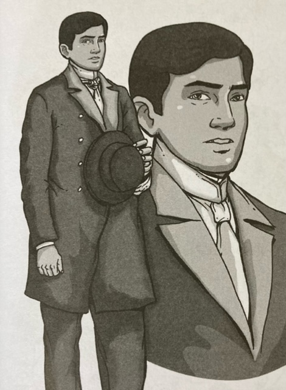
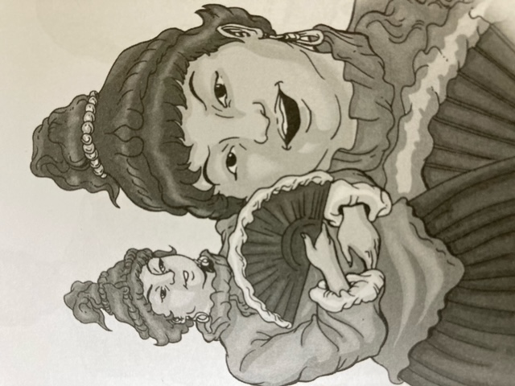
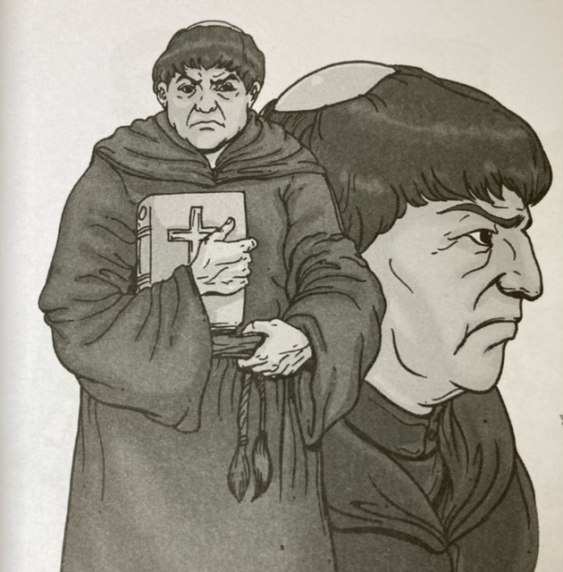
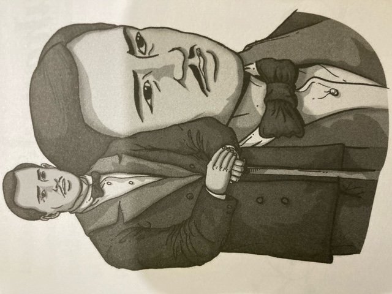

|
|
Kapitan Tiago |
He is a well-respected man who owns a mansion on Kalye Anluwage, Binundok. |
|  |
Crisostomo Ibarra |
He is the son of Don Rafael Ibarra who came home to the Philippines after years of studying in Europe. |
|  |
Donya Victorina |
She is the cousin of Kapitan Tiago who acts like a Spaniard. |
|  |
Padre Damaso |
He is an arrogant Fransiscan priest who looks down on Filipinos, and thinks the church is above the state. |
|  |
Don Rafael Ibarra |
He is the father of Crisostomo Ibarra who died in jail, and whose corpse was transferred to the cemetery of the Chinese. |
| Reference:
Cruz, E.G.(2018). Noli Me Tangere ni Jose P. Rizal. Quezon City: C&E Publishing, Inc.
|